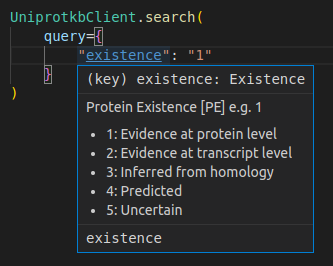

Unipressed
Please visit the project website for more comprehensive documentation.
Introduction
Unipressed (Uniprot REST) is an API client for the protein database Uniprot. It provides thoroughly typed and documented code to ensure your use of the library is easy, fast, and correct!
Example
Let's say we're interested in very long proteins that are encoded within a chloroplast, in any organism:
from unipressed import UniprotkbClient
for record in UniprotkbClient.search(
query={
"and_": [
{"organelle": "chloroplast"},
{"length": (5000, "*")}
]
},
fields=["length", "gene_names"]
).each_record():
display(record)
{ 'primaryAccession': 'A0A088CK67', 'genes': [ { 'geneName': { 'evidences': [{'evidenceCode': 'ECO:0000313', 'source': 'EMBL', 'id': 'AID67672.1'}], 'value': 'ftsH' } } ], 'sequence': {'length': 5242} }
Advantages
- Detailed type hints for autocompleting queries as you type
- Autocompletion for return fields
- Documentation for each field
- Automatic results parsing, for
json,tsv,list, andxml - Built-in pagination, so you don't have to handle any of that yourself!
- Most of the API is automatically generated, ensuring very rapid updates whenever the API changes
- Thoroughly tested, with 41 unit tests and counting!
Usage
Installation
If you're using poetry:
Otherwise:
Dataset Clients
The unipressed module exports a client object for each UniProt dataset:
With one of these clients, you can search the dataset:
records = UniprotkbClient.search({
"length": (5000, 6000)
}).each_record()
# Show the first record
next(records)
{ 'entryType': 'UniProtKB reviewed (Swiss-Prot)', 'primaryAccession': 'Q96RW7', 'secondaryAccessions': ..., 'uniProtkbId': 'HMCN1_HUMAN', 'entryAudit': ..., 'annotationScore': 5.0, 'organism': ..., 'proteinExistence': '1: Evidence at protein level', 'proteinDescription': ..., 'genes': ..., 'comments': ..., 'features': ..., 'keywords': ..., 'references': ..., 'uniProtKBCrossReferences': ..., 'sequence': ..., 'extraAttributes': ... }
You can request a single record by ID:
{ 'entryType': 'UniProtKB reviewed (Swiss-Prot)', 'primaryAccession': 'Q96RW7', 'secondaryAccessions': ..., 'uniProtkbId': 'HMCN1_HUMAN', 'entryAudit': ..., 'annotationScore': 5.0, 'organism': ..., 'proteinExistence': '1: Evidence at protein level', 'proteinDescription': ..., 'genes': ..., 'comments': ..., 'features': ..., 'keywords': ..., 'references': ..., 'uniProtKBCrossReferences': ..., 'sequence': ..., 'extraAttributes': ... }
You can also request multiple records:
[ { 'entryType': 'UniProtKB reviewed (Swiss-Prot)', 'primaryAccession': 'A0A0C5B5G6', 'uniProtkbId': 'MOTSC_HUMAN', 'entryAudit': ..., 'annotationScore': 5.0, 'organism': ..., 'proteinExistence': '1: Evidence at protein level', 'proteinDescription': ..., 'genes': ..., 'comments': ..., 'features': ..., 'geneLocations': ..., 'keywords': ..., 'references': ..., 'uniProtKBCrossReferences': ..., 'sequence': ..., 'extraAttributes': ... }, { 'entryType': 'UniProtKB reviewed (Swiss-Prot)', 'primaryAccession': 'A0A1B0GTW7', 'secondaryAccessions': ..., 'uniProtkbId': 'CIROP_HUMAN', 'entryAudit': ..., 'annotationScore': 5.0, 'organism': ..., 'proteinExistence': '1: Evidence at protein level', 'proteinDescription': ..., 'genes': ..., 'comments': ..., 'features': ..., 'keywords': ..., 'references': ..., 'uniProtKBCrossReferences': ..., 'sequence': ..., 'extraAttributes': ... } ]
ID Mapping
Unipressed also provides one other unique client, which is designed for mapping identifiers. You provide the source and destination database (both of which will autocomplete in VS Code), and a list of identifiers for the source database.
from unipressed import IdMappingClient
request = IdMappingClient.submit(
source="UniProtKB_AC-ID", dest="Gene_Name", ids={"A1L190", "A0JP26", "A0PK11"}
)
list(request.each_result())
[ {'from': 'A1L190', 'to': 'SYCE3'}, {'from': 'A0PK11', 'to': 'CLRN2'}, {'from': 'A0JP26', 'to': 'POTEB3'} ]
Note that, if you submit a large number of IDs, you might need to add a sleep() call between submitting the request and retrieving the results.
Query Syntax
The query syntax refers to the values you pass in to the query argument of the search() method.
In general, you can't go wrong by following the type hints.
I strongly recommend using something like pylance for Visual Studio Code, which will provide automatic completions and warn you when you have used the wrong syntax.
If you already know how to use the Uniprot query language, you can always just input your queries as strings:
However, if you want some built-in query validation and code completion using Python's type system, then you can instead use a dictionary. The simplest query is a dictionary with a single key:
You can compile more complex queries using the and_, or_ and not_ keys.
These first two operators take a list of query dictionaries:
Most "leaf" nodes of the query tree (ie those that aren't operators like and_) are strings, integers or floats, which you input as normal Python literals as you can see above.
For string fields, you also have access to wildcards, namely the * character.
For example, if you want every human protein belonging to a gene whose name starts with PRO, you could use:
A few query fields are ranges, which you input using a tuple with two elements, indicating the start and end of the range.
If you use the literal "*" then you can leave the range open at one end.
For example, this query returns any protein that is in the range \([5000, \infty)\)
Finally, a few query fields take dates.
These you input as a Python datetime.date object.
For example, to find proteins added to UniProt since July 2022, we would do:
Use with Visual Studio Code
To get VS Code to offer suggestions, press the Trigger Suggest shortcut which is usually bound to Ctrl + Space.
In particular, code completion generally won't work until you open a string literal using a quotation mark.
Secondly, to get live access to the documentation, you can either use the Show Hover shortcut, which is usually bound to Ctrl + K, Ctrl + I, or you can install the docs-view extension, which lets you view the docstrings in the sidebar without interfering with your code.
Screenshots


API
unipressed.dataset.core.DatasetClient
The base class for all UniProt dataset clients. All methods documented here are available in any of the subclasses. This is a static class that you will never need to instantiate.
fetch_one(id: str, format: str = 'json', parse: bool = True) -> JsonResultType | IOBase
classmethod
Fetches a single record from this dataset using its ID.
Parameters:
-
idThe ID of the record to fetch. The format of this will depend on the dataset.
-
formatThe format of the result. The available options will depend on the subclass you are using, but the type checker/autocomplete will enforce available options.
-
parseIf true, parse the result into a JSON dictionary. Defaults to True.
Returns:
-
JsonResultType | IOBaseIf parse is True, a dictionary. Otherwise, a file object containing the results in the specified format.
search(query: QueryType, format: FormatType | Literal['json'] = 'json', fields: Iterable[FieldsType] | None = None, size: int = 500, include_isoform: bool = True) -> Search[QueryType, JsonResultType, FieldsType, FormatType]
classmethod
Creates an object that can be used to perform a search query over this dataset. Refer to the unipressed.dataset.search.Search reference for more information on how to use it.
unipressed.dataset.core.FetchManyClient
Bases: DatasetClient[QueryType, JsonResultType, FieldsType, FormatType]
Dataset subclass for datasets that can be queried by multiple IDs. Not all datasets support this.
fetch_many(ids: Iterable[str], format: FormatType | Literal['json'] = 'json', parse: bool = True) -> Iterable[JsonResultType] | IOBase
classmethod
Fetches multiple records using their accessions.
Parameters:
-
idsThe accessions to query
-
formatThe format to return the records. Defaults to "json".
-
parseOnly supported for JSON. If True, parses the result instead of returning a raw file. Defaults to True.
Returns:
-
Iterable[JsonResultType] | IOBaseIf parse is True, a list of dictionaries. Otherwise, a file object containing the results in the specified format.
unipressed.dataset.search.Search
dataclass
Class coordinating search requests. Generally you shouldn't instantiate this manually, but should rather use unipressed.DatasetClient.search to do so.
each_response() -> Iterable[requests.Response]
Returns a generator of requests.Response objects, one for each page of the result.
each_page() -> Iterable[TextIO]
Returns a generator of unzipped file objects, one for each page of the result.
each_record() -> Iterable[Any]
Returns a generator of records, which are defined by the format field of the original request.
For example, with format="json", this will be an iterator over dictionaries parsed from JSON.
unipressed.IdMappingClient
dataclass
Client for submitting requests to convert between identifiers.
submit(source: str, dest: str, ids: Iterable[str], taxon_id: int | None = None) -> IdMappingJob
classmethod
Submits this ID mapping request to the UniProt server, and returns a new object that can be used to access the results
Parameters:
-
source(str)Name of the database from which the ids originate
-
dest(str)Name of the database that the IDs will be converted to
-
ids(Iterable[str])Set of IDs to convert
-
taxon_id(int | None, default:None)Optionally, a UniProt taxon ID to restrict the results to. For example, you can use
4932to restrict the results to Baker's yest (https://www.uniprot.org/taxonomy/4932).
unipressed.id_mapping.core.IdMappingJob
dataclass
Object that tracks the status and results of an ID mapping request that has been sent to the UniProt server.
each_result() -> Iterable[IdMappingResult]
Returns a generator over dictionaries of results, one for each input ID.
get_status() -> UniprotStatus
Returns a string describing the status of the job (ie if it has completed or not).
unipressed.id_mapping.core.IdMappingResult = TypedDict('IdMappingResult', {'from': str, 'to': str})
module-attribute
unipressed.ArbaClient
Bases: DatasetClient[ArbaQuery, Mapping[str, Any], ArbaFields, ArbaFormats]
unipressed.CitationsClient
Bases: DatasetClient[CitationsQuery, Mapping[str, Any], CitationsFields, CitationsFormats]
unipressed.DiseasesClient
Bases: DatasetClient[DiseasesQuery, Mapping[str, Any], DiseasesFields, DiseasesFormats]
unipressed.KeywordsClient
Bases: DatasetClient[KeywordsQuery, Mapping[str, Any], KeywordsFields, KeywordsFormats]
unipressed.LocationsClient
Bases: DatasetClient[LocationsQuery, Mapping[str, Any], LocationsFields, LocationsFormats]
unipressed.ProteomesClient
Bases: DatasetClient[ProteomesQuery, Mapping[str, Any], ProteomesFields, ProteomesFormats]
unipressed.TaxonomyClient
Bases: FetchManyClient[TaxonomyQuery, Mapping[str, Any], TaxonomyFields, TaxonomyFormats]
unipressed.UniparcClient
Bases: FetchManyClient[UniparcQuery, Mapping[str, Any], UniparcFields, UniparcFormats]
unipressed.UniprotkbClient
Bases: FetchManyClient[UniprotkbQuery, Mapping[str, Any], UniprotkbFields, UniprotkbFormats]
unipressed.UnirefClient
Bases: FetchManyClient[UnirefQuery, Mapping[str, Any], UnirefFields, UnirefFormats]
unipressed.UniruleClient
Bases: DatasetClient[UniruleQuery, Mapping[str, Any], UniruleFields, UniruleFormats]
Changelog
1.4.0
Added
- The
taxon_idargument toIdMapper.submit[#36] - Detailed type annotations for
IdMapper.submit, that enforce only certain pairs ofsource/destdatabases
Changed
- Auto-generated type definitions for the datasets have been regenerated [#37]. This pulls upstream changes from Uniprot. For a full list of changes view this commit diff.
- Uniref's
createdqueryparameter has been replaced bylast_modified - UniprotKB has lost various
fields:xref_genevisible,xref_dosac-cobs-2dpage",xref_swiss-2dpage,xref_ucd-2dpage,xref_world-2dpage,xref_epd,xref_maxqb,xref_koandxref_genevisible
- Uniref's
1.3.0
Changed
- Auto-generated type definitions for the datasets have been regenerated [#31]. This pulls upstream changes from Uniprot. For a full list of changes view this commit diff.
- Auto-generated type definitions for the ID mapper have been regenerated [#30, @hlfernandez]
- Remove Python 3.7 support and support 3.12
1.2.0
Added
DatasetClient.search()now has aninclude_isoformparameter, which specifies if you want isoforms to be returned [#27, @godotgildor]- Python 3.11 is now officially supported
Changed
- Auto-generated type definitions have been regenerated [#28]. This pulls upstream changes from Uniprot which are description-only:
- All the
cc_query fields forArbaandUnirulesuch ascc_cofactorandcc_domainhav updated descriptions Uniparc's list of databases has increased in thedatabasequery field
- All the
1.1.0
Changed
unipressed.IdMappingClient.get_status()now returns aLiteral, which gives your type checker/IDE access to the possible return values.
Fixed
unipressed.IdMappingClient.get_status()now wraps a bug in the UniProt API (#293), ensuring that it will return a valid job status even when the API itself does not. [#21]
1.0.0
Changed
- Breaking: Reworked the search API. Broadly this means that rather than using
unipressed.UniprotkbSearch, you should now use theunipressed.UniprotkbClientclass, which encapsulates the dataset's APIs. You can then perform a search query usingUniprotkb.search(). - Breaking: Restructured the Python package. Most imports have changed.
Added
- The new client objects support
.fetch_one()and.fetch_many()which can be used to look up one or more database entries using their IDs - An ID mapping client. This can be accessed as
unipressed.IdMappingClient
0.2.0
Note, if you are using Visual Studio Code, please update Pylance to at least version 2022.8.20.
A bug in earlier versions will give you false errors with this new release of unipressed.
Added
-
Also allow strings within the query dictionary, so that e.g. this is now allowed:
This will search for all proteins that have any field that starts withfooand any field that ends withbar. -
Auto generated docstrings for all fields
- Examples to the documentation of each field
- Certain missing query fields for the
arbadataset:cc_scl_term
- Certain missing query fields for the
proteomesdataset:organism_idtaxonomy_id
- Certain missing query fields for the
uniruledataset:cc_scl_term
- Certain missing query fields for the
uniparcdataset:taxonomy_id
- Certain missing query fields for the
uniprotkbdataset:organism_idtaxonomy_idvirus_host_id
Removed
- Uniprot seem to have removed certain
uniprokbquery fields, so these are now not part of the accepted query type:ft_metalftlen_metalft_ca_bindftlen_ca_bindft_np_bindftlen_np_bind
- Likewise, some
uniprotkbreturn fields have been removed:ft_ca_bindft_metalft_np_bind
Internal
- Move from
pyhumpstoinflectionfor code generation - Add a test for the date field
- Added tests for all datasets
- Add types for code generation API